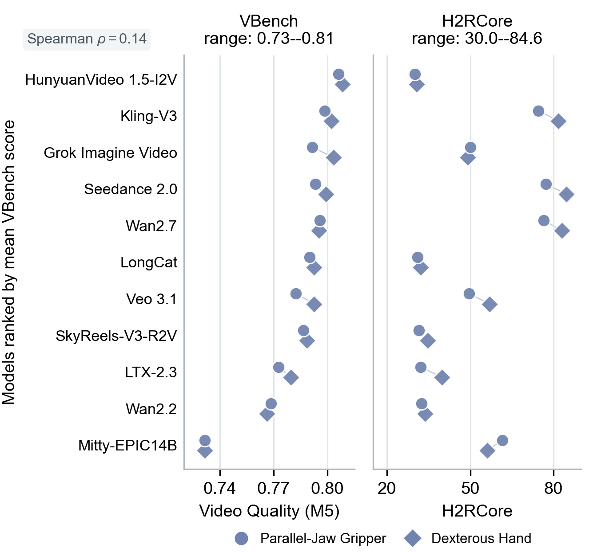
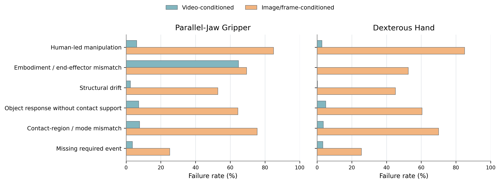
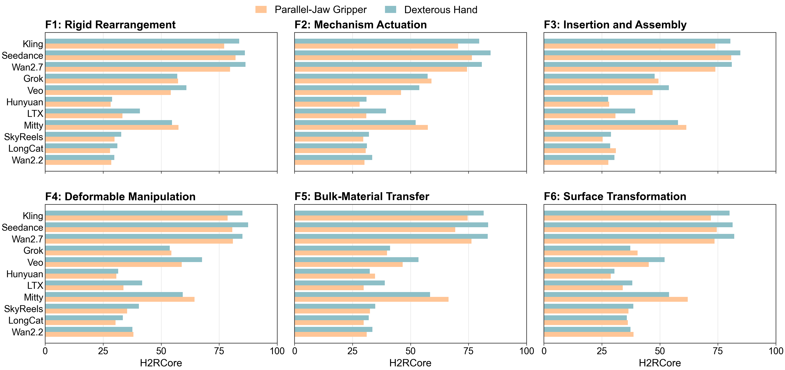
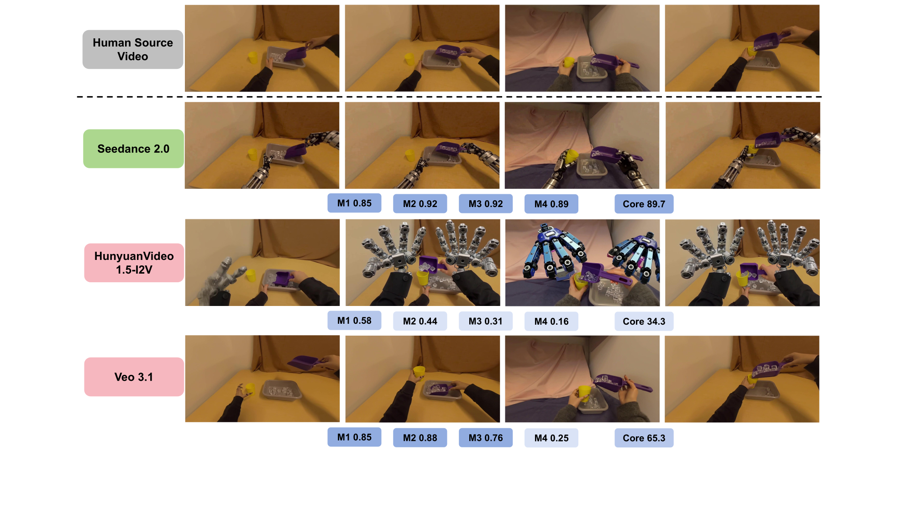
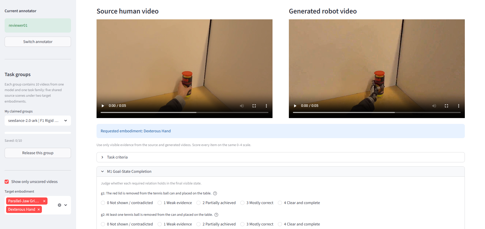

Large-scale manipulation data is essential for robot learning, yet collecting robot demonstrations remains expensive and difficult to scale. Meanwhile, abundant egocentric human manipulation videos provide rich behavioral experiences, but transferring them across embodiments remains challenging due to differences between human hands and robotic end-effectors. Recent advances in video world models offer a promising pathway to synthesize robot-centric manipulation videos from human observations, while their cross-embodiment transfer capability remains largely unexplored. Therefore, we introduce H2R-Bench, a benchmark for evaluating cross-embodiment human-to-robot manipulation video generation, where models transform egocentric human demonstrations into robot manipulation videos under specified embodiments. Each benchmark instance contains a human demonstration video, target embodiment constraints, and source-grounded annotations covering task goals, action events, functional contacts, and object responses. H2R-Bench evaluates generated videos through five dimensions, including goal-state completion, action-event completion, functional contact transfer, embodiment correctness, and general video quality. We benchmark eleven state-of-the-art video generation models across six manipulation families and two robot embodiments. Our evaluation reveals that current video world models remain limited in human-to-robot manipulation transfer: even leading models often fail in embodiment consistency, functional interaction, and task execution. H2R-Bench provides a systematic diagnostic framework for evaluating whether video world models can bridge the human-to-robot embodiment gap and convert human manipulation observations into robot-centric training resources.
Motivation
A generated robot video is an intermediate representation of a target robot execution conditioned on a human demonstration. The key challenge is therefore not producing a visually plausible robot video, but preserving the manipulation evidence in the source demonstration while adapting the execution to a different embodiment. Frame-level realism and temporal coherence say nothing about this: a coherent clip can retain human hands, realize the wrong end-effector, or show object changes unsupported by any visible robot interaction.
Existing benchmarks are open-domain, text-conditioned, or robot-centric. None of them takes an egocentric human-hand video as source evidence and checks whether it was retargeted to a different robot embodiment, so they miss exactly the failures that matter for robot learning: residual human hands, incorrect target embodiment, broken bimanual roles, missing contact causality, and inconsistent object-state transitions.
| Benchmark | Settings | Evaluation | ||||||
|---|---|---|---|---|---|---|---|---|
| I2V | RV | H2R | VQ | Goal | Action | Cont. | Emb. | |
| VBench | × | × | × | ✓ | × | × | × | × |
| WorldModelBench | ✓ | △ | × | ✓ | △ | △ | × | × |
| RBench | ✓ | ✓ | × | ✓ | ✓ | ✓ | × | △ |
| RoboWM-Bench | ✓ | ✓ | × | △ | ✓ | ✓ | × | × |
| RoboTrustBench | ✓ | ✓ | × | ✓ | ✓ | ✓ | × | △ |
| H2R-Bench (ours) | ✓ | ✓ | ✓ | ✓ | ✓ | ✓ | ✓ | ✓ |
Comparison of H2R-Bench and existing video-generation benchmarks across evaluation capabilities. “I2V”, “RV”, and “H2R” denote image-to-video generation, robot-video evaluation, and human-to-robot transfer. Evaluation dimensions include visual quality, goal completion, action completion, functional contact transfer, and embodiment consistency. ✓, △, and × indicate full, partial, and no support.
Benchmark
Each case is a triple (Vh, e, p): a 5-second egocentric human source video, a target embodiment, and a generation prompt that names the task goal and target embodiment and asks the model to preserve the source scene, objects, and interaction. The prompt deliberately contains no evaluation weights, evidence-frame indices, or per-metric checks — those live in a separate annotation used only for scoring. We do not require pose or trajectory imitation: a parallel-jaw gripper and a dexterous hand may solve the task differently, as long as the new strategy stays compatible with the requested morphology and the source task.
120 EgoDex test-split clips with visible task-relevant entities, interactions, and state changes, evenly spread over six manipulation families (20 sources each), paired with two target embodiments to give 240 transfer cases.
Per clip: initial and final states, relevant objects and tools, required action events, and source-side contact evidence; per embodiment: functional contact regions, manipulation modes, expected object responses, and bimanual roles. All annotations are manually verified against the source video.
Native-interface protocol: video-conditioned models receive the full source clip, frame-conditioned models receive ordered source frames up to their interface limit. No target-robot reference image in the main setting — the embodiment is specified in text only.
Six manipulation families. F1 rigid-object transport or rearrangement · F2 articulated-mechanism actuation · F3 insertion or attachment · F4 deformable-object configuration · F5 bulk-material transfer or mixing · F6 surface or material change. Two target embodiments: a parallel-jaw gripper and a dexterous hand.
Evaluation
M1–M4 measure whether the source manipulation was transferred correctly; M5 separately measures task-agnostic video quality. For M1–M4, three MLLM judges (Gemini 3.5 Flash, Qwen3.7-Plus, GPT-5.4) independently assess the prescribed visual evidence on a shared 0–4 rubric, where 0 means absent or contradictory evidence and 4 means clear and complete satisfaction. Judge scores are normalized to [0, 1] and averaged. Every metric sees 25 uniformly sampled frames, so all models are judged with the same evidence budget.
Weighted predicates describing the final state required for success — a spatial or containment relation, a mechanism state, an attachment, a deformation, a material distribution, or a surface change. The sequence gives context; the final frames decide.
How clearly the required events are carried out — grasping, inserting, releasing, pouring, wiping, folding. Concerns whether the operations occur, not whether the robot reproduces the human pose, trajectory, or timing.
Judges compare 25 source frames against 25 generated frames plus a source-derived contact specification: contacted functional region, whether contact is visibly established, manipulation mode, whether the object response follows, and feasibility for the requested embodiment. A different grasp is fine if the contact serves the same function.
Separates robot presence from morphology: is a robot visible, do human hands remain, is the requested embodiment class used, is the end-effector type correct, is the structure temporally consistent. If no robot is present or a human performs the main manipulation, the score is zero.
Computed without any task annotation. Averages four normalized components: imaging quality (MUSIQ), aesthetic quality (LAION linear predictor over CLIP ViT-L/14 features), temporal stability from adjacent-frame differences, and motion smoothness from AMT-S midpoint interpolation error.
Contact and embodiment jointly account for 60% of the score: valid transfer requires both a functionally supported interaction and the requested robot morphology, and equal weights avoid privileging one over the other. Goal and action preserve the source task but neither is sufficient — a human-led or wrong-embodiment video can still show the correct outcome and actions. Video quality contributes 0.10, so visual polish cannot substantially compensate for contact or embodiment failures.
Leaderboard
All 11 models are evaluated on the 240 transfer cases through their native source-conditioning interfaces. The three video-conditioned systems occupy the top positions; among them goal and action scores are similar, and almost all of the separation comes from contact transfer and embodiment correctness. Below that, the frame-conditioned group collapses: several models retain high goal, action, and video-quality scores while their embodiment score falls to near zero.
| Model | Parallel-Jaw Gripper | Dexterous Hand | ||||||||||
|---|---|---|---|---|---|---|---|---|---|---|---|---|
| Goal | Action | Contact | Embod. | Quality | H2RCore | Goal | Action | Contact | Embod. | Quality | H2RCore | |
| Video-conditioned generation | ||||||||||||
| Seedance 2.0 | 0.725 | 0.813 | 0.776 | 0.768 | 0.793 | 77.3 | 0.744 | 0.832 | 0.855 | 0.911 | 0.799 | 84.6 |
| Wan2.7 | 0.706 | 0.791 | 0.766 | 0.772 | 0.796 | 76.5 | 0.718 | 0.804 | 0.835 | 0.910 | 0.795 | 83.1 |
| Kling-V3 | 0.710 | 0.807 | 0.751 | 0.707 | 0.798 | 74.5 | 0.707 | 0.800 | 0.819 | 0.885 | 0.802 | 81.7 |
| Frame-conditioned generation | ||||||||||||
| Mitty-EPIC14B | 0.581 | 0.668 | 0.598 | 0.585 | 0.732 | 61.5 | 0.587 | 0.684 | 0.598 | 0.392 | 0.732 | 56.1 |
| Veo 3.1 | 0.725 | 0.797 | 0.533 | 0.100 | 0.783 | 49.6 | 0.715 | 0.816 | 0.642 | 0.227 | 0.793 | 57.0 |
| Grok Imagine Video | 0.661 | 0.729 | 0.443 | 0.268 | 0.792 | 50.1 | 0.678 | 0.729 | 0.469 | 0.198 | 0.804 | 49.2 |
| LTX-2.3 | 0.473 | 0.545 | 0.292 | 0.012 | 0.773 | 32.1 | 0.520 | 0.592 | 0.377 | 0.132 | 0.780 | 39.8 |
| SkyReels-V3-R2V | 0.448 | 0.610 | 0.256 | 0.004 | 0.787 | 31.5 | 0.441 | 0.607 | 0.341 | 0.026 | 0.789 | 34.6 |
| Wan2.2 | 0.492 | 0.639 | 0.258 | 0.000 | 0.769 | 32.4 | 0.512 | 0.653 | 0.286 | 0.000 | 0.766 | 33.7 |
| LongCat | 0.472 | 0.583 | 0.243 | 0.000 | 0.790 | 31.0 | 0.428 | 0.545 | 0.298 | 0.020 | 0.793 | 32.0 |
| HunyuanVideo 1.5-I2V | 0.535 | 0.549 | 0.184 | 0.005 | 0.806 | 30.0 | 0.499 | 0.555 | 0.185 | 0.041 | 0.808 | 30.7 |
Main-evaluation results by target embodiment. M1–M5 measure goal completion, action completion, contact transfer, embodiment correctness, and video quality; H2RCore aggregates all five on a 0–100 scale. Rows are ordered by the sum of the two H2RCore scores within each conditioning group. Bold and underlined entries mark the best and second-best result in each column.
Analysis

Video quality versus H2RCore. Across 22 model–embodiment pairs, video quality lies in a narrow 0.73–0.81 band while H2RCore spans 30.0 to 84.6, and their rank association is weak (Spearman ρ = 0.14). HunyuanVideo 1.5-I2V leads on video quality but sits near the bottom of H2RCore, whereas Mitty-EPIC14B has the lowest video quality yet substantially stronger transfer scores.

Where the transfers break. Failure-type rates derived from the structured M2–M4 diagnostics on the 120-source evaluation set; a failure is recorded when the judge-averaged diagnostic component falls below 0.5, and categories are non-exclusive because one generation can violate embodiment, contact, and action requirements at once. Human-led manipulation and contact-region mismatch dominate frame-conditioned outputs, while end-effector mismatch remains common for the parallel-jaw gripper even among stronger models. M3 additionally treats source-scene or task-entity substitution as a hard failure: generic-looking contact in a different scene is not contact transfer.
Embodiment & Conditioning
| Metric | Mean change (Hand − Gripper) | Hand higher |
|---|---|---|
| Goal-State Completion (M1) | +0.002 | 6/11 |
| Action-Event Completion (M2) | +0.008 | 8/11 |
| Functional Contact Transfer (M3) | +0.055 | 11/11 |
| Embodiment Correctness (M4) | +0.047 | 8/11 |
| Video Quality (M5) | +0.004 | 8/11 |
| H2RCore (0–100) | +3.3 | 9/11 |
Effect of target embodiment across all 11 models, on the same 120 sources. Mean change is the average score difference between the dexterous hand and the parallel-jaw gripper; “Hand higher” counts models with a positive difference.

Task-family H2RCore profiles. Each panel compares parallel-jaw gripper and dexterous hand transfer for the same 11 models across the six manipulation families, on a shared 0–100 scale, exposing both task-dependent difficulty and embodiment-dependent model preferences.
Agreement between human and MLLM evaluators. Human raters and MLLM judges rank generated videos by the transfer score aggregated from M1–M4. MLLM-based evaluation aligns closely with human judgment, with Spearman correlations above 0.8 across evaluators.
Qualitative Results

Qualitative H2R transfer results for a shared source video and prompt. The unscored top row is the human source; the generated rows show representative stages of each output, and the metric strips report per-video M1–M5 and H2RCore. Seedance 2.0 maintains visible robot contact with the scoop and transfers the ice into the cup. HunyuanVideo 1.5-I2V leaves the human as the active manipulator, preserving the action without transferring it to the robot. Veo 3.1 produces a plausible interaction with the wrong end-effector. The four metrics capture complementary evidence — M1 the outcome, M2 the required events, M3 visible robot–scoop contact, M4 the requested embodiment — and a correct final state alone does not establish successful transfer.
Human Evaluation

Each task group contains five shared source scenes from one model and task family under both target embodiments, yielding ten videos. Annotators inspect the source and generated clips side by side, verify the requested embodiment, and score the source-derived criteria on a common 0–4 scale. Scores are stored separately per annotator, and automatic MLLM judgments are never displayed.
Scope
H2R-Bench evaluates visible evidence of human-to-robot transfer, not physical executability or downstream policy performance. Its 120 EgoDex sources and two target embodiments cover only part of the variation found in real manipulation settings. The native-interface comparison combines model capability with differences in source-conditioning interfaces, so group-level patterns are descriptive rather than causal. Finally, sampled visual evidence and MLLM judgments can remain uncertain under occlusion, subtle contact, or severe generation artifacts, despite multi-judge aggregation and human validation.
@article{rong2026h2rbench,
title={H2R-Bench: Benchmarking Human-to-Robot Manipulation Video Generation in World Models},
author={Rong, Dingyi and Shi, Yue and Ma, Chaofan and Cao, Jiezhang and Wang, Zongrui and Zhang, Zeyu and Mu, Yao and Zhai, Guangtao and Liu, Ning},
journal={arXiv preprint arXiv:ARXIV_ID},
year={2026}
}